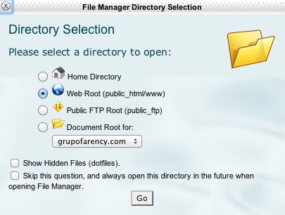
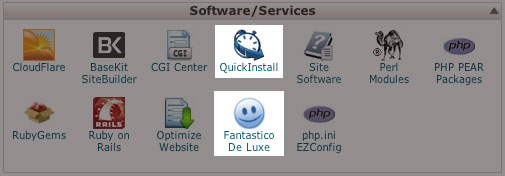
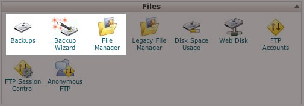

Grupo Farency - Hosting Ecuador EC
Guia rapida sobre el manejo de su cuenta de hosting
 NOTA: Algunas tildes y/o caracteres especiales han sido eliminados para mejorar compatibilidad
NOTA: Algunas tildes y/o caracteres especiales han sido eliminados para mejorar compatibilidad
Puede acceder a una explicacion resumida escuchando este material en audio.
(active un dispositivo de audio para escuchar)
IMPORTANTE: Cuando haya terminado de revisar este material puede eliminarlo simplemente haciendo clic en el botón de eliminar
Bienvenido: Antes que nada deseamos agradecer su compra y confianza en nuestra marca, contamos con el sistema de soporte al cliente mas eficiente y rápido en el mercado y será un placer ayudarlo con sus requerimientos
Listo para iniciar ?
En el lado izquierdo podrá seleccionar entre los items más útiles y populares al momento de utilizar un servicio de web hosting. Asegúrese de comprender todos los aspectos detallados en este documento, el hacerlo le garantiza un óptimo aprovechamiento de su inversión y una experiencia de uso optimizada
Con tu "LIKE" podras recibir noticias y actualizaciones importantes
Importante
Toda la información necesaria para el acceso a su cuenta ha sido enviada al email del registrante de la cuenta, conserve esa información en un lugar seguro.
Cargar información únicamente en la carpeta "public_html", si lo hace en otro lado su cuenta puede no funcionar correctamente
Configurar correctamente los parámetros de "DNS o NS" en su dominio. Si ha comprado el dominio con nosotros no necesita realizar ninguna configuración
Una vez recibida la información de acceso a su cuenta cambie todas las contraseñas. No use palabras del diccionario ni nombres o fechas que puedan asociarse a usted o sus familiares
Revise todo el material de soporte necesario antes de realizar cualquier configuración de su cuenta. Para ello incluimos mas de 180 videos de soporte.
No intente enviar email masivo, su cuenta no esta configurada con esa finalidad. si necesita enviar correo masivo contacte con nosotros.
Sobre su dominio, las IP´s y formas de acceder a su cuenta
- URL TEMPORAL: Hasta que su dominio se propague puede usar su URL temporal para acceder a su cuenta de hosting y realizar algunos procedimeintos como cargar su información, crear cuentas de correo o instalar algún script, por ejemplo, si su URL temporal es "http://192.185.1246.124/~cliente" únicamente reemplace "~cliente/" por la palabra "cpanel" de tal manera que su URL quede de esta forma: "http://192.185.1246.124/cpanel". El sistema le pedira usuario y contraseña, utilice los datos que llegaron en el e-mail de información de su cuenta
- Nunca deje que su dominio expire - Una vez que la fecha límite de renovación del dominio se ha vencido el dominio puede entrar en un proceso de subasta, recuperarlo no es seguro y si logra hacerlo le costará mucho mas de lo que ha pagado por el inicialmente.
- Configure su dominio - Para que sus clientes puedan acceder a su website su desde su dominio usted deberá tenerlo ya configurado con los parámetros que se le envían al momento de configurar la cuenta
- Tiempo de propagación - Un dominio puede demorar en propagarse hasra 48 horas, esto no depende de ningún proveedor de hosting y no hay forma de acelerar este proceso, le recomendamos tomar en cuenta este particular siempre pensando en el beneficio para sus clientes
- Su IP - Una IP es asignada a usted al momento de comprar una cuenta de hosting, es una serie de números parecido a esto "192.100.236.110 " esto le servirá para configurar funciones como cuentas de correo o FTP. Su IP no puede cambiarse a voluntad
- Dominios adicionales - Usted puede comprar mas dominios para que todos ellos apunten a su misma cuenta de hosting, el hacerlo le puede traer ventajas en relación a su competencia, mientras mas dominio tenga que se relacionen con sus servicios usted está limitando a la competencia a usar esos dominios en su contra
- Precios de dominios - El precio del dominio que usted ha pagado al momento de comprar su cuenta ya posee un descuento inicial por que está asociado a una cuenta de hosting. Si usted desea contratar dominios adicionales sin el servicio de hosting consulte con nosotros para ofrecerle la mejor alternativa para hacerlo
- Transferencia de dominios - Si ha comprado un dominio con nosotros usted puede solicitar la transferencia del dominio en cualquier momento, sin embargo para que los servicios asociados a su dominio trabajen correctamente le recomendamos mantener el servicio de hosting y dominio en un sólo proveedor
Creacion de cuentas de email y configuraciones basicas
Grupo Farency ofrece la opción de solicitar la creación y configuración de sus cuentas de correo sin costo alguno al momento de contratar el servicio.
Crear cuentas de correo - Puede crear las cuentas de correo desde su Cpanel en el siguiente orden: CPANEL > MAIL > EMAIL ACCOUNTS.
Configuraciones para usar Outlook - Dependiendo de la versión de Outlook que usted tenga favor revisar estos instructivos
Tiene muchas cuentas de email y se está volviendo loco ? - Use GMAIL para centralizar todas sus cuentas en un sólo servicio y ahorre tiempo enviando y recibiendo email y utilizando siempre su propio dominio. Puede ver la configuración aquí
Email desde el celular - Puede usar el procedimiento anterior o a su vez configurar en su celular el servicio de email, consulte con su proveedor la forma correcta de hacerlo y tenga a mano su dirección IP
Como cargar informacion en su servicio de hosting ?
Debe cargar todos los archivos en la carpeta "PUBLIC_HTML" de no hacerlo ahi su website puede presentar errores
OPCION 1:CPANEL > Files > File manager > Web root (public_html/www) 
OPCION 2:
USANDO FTP: También puede subir sus archivos usando cualquier programa FTP. Recomendamos FILEZILLA
Herramientas de uso frecuente
Principales herramientas - Acceda desde su Cpanel
- Email Accounts - Crea cuentas de email
- Forwarders - Le permite crear redirecciones para enviar duplicados del email entrante a otras cuentas
- FTP accounts - Le permite crear cuentas FTP para subir información a su servicio de hosting
- Backup Wizard - Le guía paso a paso para obtener respaldos de su información
- Awstats - Le permite obtener estadísticas de como se comportan sus visitantes en su página web
- Domains - Gestiona lo relacionado con su(s) dominio(s)
- MySQL Wizard - Le guía paso a paso para crear una base de datos, no necesita conocimiéntos técnicos
- Quick Install y Fantástico - Le permiten instalar automáticamente aplicaciones en pocos pasos
No esta seguro de poder usar alguna de estas funciones ?
Somos consientes que esto al principio puede asustar, por eso siempre recuerde que somos el único proveedor que pone a su disposición un sitio web para pruebas y entrenamiento. Siéntase libre de juguetear aquí cuando lo necesite y sin poner en riesgo su cuenta
Acceda a nuestro sitio web de entrenamiento desde nuestra URL principal: http://hostingecuador.ec/
Auto - Instaladores "Joomla, WordPress, Moodle etc.
Su cuenta de hosting viene equipada con un paquete de aplicaciones como Joomla o Wordpress que usted podrá instalar de manera automática sin necesidad de conocimiento técnico. Únicamente siga las instrucciones y su nueva página web estará lista en minutos
- NOTA - El sistema realiza instalaciones limpias por defecto de cada uno de los scripts disponibles esto incluye características nativas y políticas de uso de cada una de las versiones del software instalado. Grupo Farency no ofrece soporte gratuito en aplicaciones de terceros sin embargo ofreceremos alternativas para casos como actualizaciones, diseño, personalización o instalación de aplicativos que el cliente requiera
Puede instalar sus aplicaciones en el siguiente apartado
Cpanel > Software/Services > QuickInstall o Fantastico De Luxe

En algunos casos para que funcione correctamente una aplicación deberá tener un dominio activo.
Versiones PHP - Version 5,3 disponible
En algunas ocasiones puede ser necesario subir la versión de PHP para que funcionen correctamente algunas aplicaciones externas. Puede solicitar sin costo esta actualización directamente en nuestro website o lo puede hacer usted simplemente insertando el siguiente código dentro del archivo .htaccess
# Use PHP 5.3 AddType application/x-httpd-php53 .php
Necesita ayuda ? Para ver información detallada de cómo realizar este procedimiento ingrese aquí. Si no está seguro de cómo hacerlo contáctenos y lo haremos por usted
Seguridad y respaldos de informacion
Es importante que tenga en cuenta lo siguiente:
Grupo Farency cuenta tecnología estandar en sistemas de prevención de ataques informáticos y filtros avanzados de seguridad sin embargo siempre recuerde que la responsabilidad de mantener salva la información es adjudicada al cliente final, usted deberá tomar todas las medidas de prevención dependiendo del nivel de seguridad que desee implementar en su servicio de hosting.
También ofrecemos el servicio de mantenimiento, respaldos de información y soporte técnico personalizado para cada cliente en el manejo de su cuenta de hosting . Si esto definitivamente no es lo suyo solicite información y por una cuota anual y nos haremos cargo de todo en cuanto a mantenimiento y configuraciones de su servicio de hosting
Respaldos desde su Cpanel:
Ingrese a su cpanel y utilice cualquiera de los administradores de archivos

Respaldos para Joomla
Para Joomla recomendamos ampliamente la herramienta AkeebaBackup esta herramienta saca respaldos de todo su sitio incluyendo bases de datos. Puede ser usada para migrar un sitio web completo en solo minutos
Para obtener mayor información sobre cómo usarla ingrese aquí
Que no puede hacer =(
Al momento de contratar una cuenta de hosting usted está aceptando nuestros términos y condiciones de uso del servicio, esto implica responsabilidades de parte y parte con la finalidad de que usted obtenga la mejor experiencia durante su estancia en nuestros servidores, sin embargo vale recordar las principales infracciones que se debe evitar:
- Envío de email masivo está prohibido, si necesita hacerlo contacte con nosotros antes
- Difusión de pornografía, juegos de azar y/o loterías de cualquier tipo, promoción ilegal directa o indirecta de música, videos o cualquier material protegido por derechos de autor
- Cualquier tipo de actividad irresponsable o maliciosa que la lógica y el sentido común te lo digan al oído, o que esté penalizada por las leyes y reglamentos vigentes
Cualquier tipo violación o infracción en estos puntos puede resultar en la terminación de su cuenta sin aviso previo y sin posibilidad de reembolso, no importa lo que usted pueda argumentar al respecto
Mantenimiento de la cuenta de hosting
Una cuenta de hosting podrá trabajar de corrido y durante mucho tiempo casi sin presentar ningún inconveniente o necesidad de mantenimiento, sin embargo siga estas cortas recomendaciones con la finalidad de mantener un buen rendimiento de su cuenta
- Revise de vez en cuando la capacidad de sus cuentas de correo. Si quieres obtener espacio ilimitado en tu bandeja de entrada utiliza Outlook, o consulta con nosotros cómo hacerlo
- Evite cargar directamente videos, utilice sistemas de incrustación para evitar consumir recursos de su cuenta
- Lo que no use desactívelo o elimínelo, esto aplica a archivos abandonados, links rotos, scripts almacenados o instalados sin ninguna función
- Evite usar Flash, a menos que su actividad dependa de ello
- Cambie sus claves periódicamente
- Ha escuchado de CLOUDFLARE ?, este servicio mejorará mucho el rendimiento de su website. Recomendamos dar un vistazo
Soporte tecnico y asesoria
Contactanos y estaremos encantados de ayudarte
Nuestro servicio está orientado a crear oportunidades y generar ingresos, si estás aquí es por que has decidido tomar el toro por los cuernos y eso nos encanta..! Tenemos muchas cosas que te ayudarán a iniciar tu camino en internet. Escríbenos, llámanos o déjanos saber tus requerimientos y encontraremos la mejor forma de ayudarte =)
-
Foros de debate - http://www.farencyhost.com/
-
Videos Instructivos - http://hostingecuador.ec/videos-instructivos
-
Ticketes de soporte especializado - http://hostingecuador.ec/contactenos
-
Chat en línea - Disponible de lunes a viernes en horario extendido de 8:00am - 20:00pm
Terminos y condiciones de uso del servicio
Puede acceder a la descarga de la versión PDF desde aquí.
Si consideras que ha faltado algún tema importante por describir en este documento escríbenos y lo tomaremos en cuenta para futuras entregas
Gracias por utilizar nuestro servicios
Grupo Farency - Ecuador